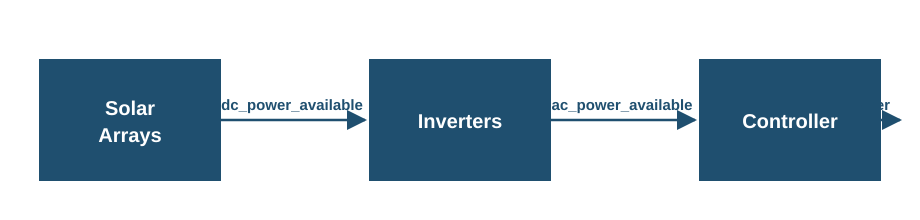

Solar PV#
Hercules uses NLR PySAM to drive NLR System Advisor Model (SAM) PV technology models.
The only solar implementation currently in Hercules is:
SolarPySAMPVWatts— PVWatts via PySAMPvwattsv8. It is fast and suitable for long runs (e.g. about one year). Setcomponent_type: SolarPySAMPVWattsin the component YAML. The section key is a user-chosencomponent_name(e.g.solar_farm); see Component Names, Types, and Categories.
Inputs#
The solar component requires a weather time-series file. Supported formats are CSV, pickle (.p), Feather (.f/.ftr), and Parquet. The file should include:
A
time_utccolumn (see timing for time format requirements). Eachtime_utcvalue marks the start of a reporting period; irradiance and weather on that row are period averages. See Time Interpretation for how Hercules converts them to instants.DNI, DHI, and GHI in columns whose names include the usual “Direct Normal…”, “Diffuse Horizontal…”, and “Global Horizontal…” substrings (see the solar module’s column lookup)
Wind speed
Air temperature (dry-bulb)
The system location (latitude, longitude, and elevation) is specified in the input yaml file.
Resource-resolution PySAM execution (use_resource_solar_dt)#
By default, when the solar weather file is at a coarser time step than the
Hercules dt, PySAM is executed once at the resource weather resolution
and its power and diagnostic outputs are upsampled to the Hercules grid.
This avoids re-running PySAM tens of thousands of times against
essentially-identical interpolated weather, which becomes the dominant cost
once bifacial modeling is enabled.
The behavior is controlled by an opt-out flag:
solar_farm:
use_resource_solar_dt: false # defaults to true, opt out by using false
The feature only activates when the file’s resource dt is strictly greater than
dt. When the resource dt equalsdt(or the flag is set tofalse), Hercules falls back to the existing path that runs PySAM once per Hercules step.Resource dt is auto-detected from the loaded weather file (the difference between consecutive sorted timestamps).
The PySAM outputs are upsampled to Hercules dt using
"averaged_to_instantaneous"(the same midpoint-corrected interpolation introduced in PR #249). This is the single boundary crossing from the raw start-of-period averaged convention to the Hercules instantaneous convention - see Time Interpretation.
PVWatts time convention (why this is safe)#
PVWatts is convention-preserving: each input row is interpreted as a
start-of-period average over the model’s current time step, and each output
row is reported under the same convention. The only mid-step shift PVWatts
applies is internal sun-position math, which it computes at the midpoint of
each input time step (see the SAM help page on
Time and Sun Position
and the
PVWatts Version 5 Manual
§”Sun Position”). Because PVWatts does not shift the values of the
irradiance/temperature inputs, performing the single
“averaged → instantaneous” boundary crossing on the PVWatts outputs (at
Hercules dt) is numerically equivalent to performing it on the inputs (at
Hercules dt) and then running PVWatts at every Hercules step in the
linear-PVWatts limit.
The one remaining numerical effect of the toggle is that PVWatts’
internal sun-position half-step now operates at dt_compute / 2 rather
than dt_hercules / 2. For hourly resource data near sunrise/sunset this
can introduce a small bias relative to the prior path; setting
use_resource_solar_dt: false recovers the prior behaviour exactly.
Power Flow#
The solar component models three distinct power quantities at each time step, corresponding to successive stages along the plant’s electrical path:
{kind=link}

dc_power_available(kW): the full DC potential of the arrays, before the inverters. This is the modeled DC output (e.g. PVWattsOutputs.dc, W → kW) and reflects irradiance, temperature, and DC-side losses, but not inverter behavior or control.ac_power_available(kW): the post-inverter AC potential of the plant. It includes inverter inefficiency and AC clipping at the inverter nameplate (per PVWattsOutputs.ac, W → kW), but does not include any Hercules control-based curtailment.power(kW): the delivered AC power after the Hercules controller. When the controller imposes an AC setpoint belowac_power_available,powerreflects the curtailed value; otherwisepowerequalsac_power_available.
Outputs#
At each time step, h_dict[component_name] is updated with power,
ac_power_available, and dc_power_available (all in kW), as well as the
weather/geometry diagnostics (dni, poa, aoi). All three power quantities
can be selected for HDF5 logging via log_channels (see below), though the power variable is always logged by default.
The YAML system_capacity is the DC array capacity at STC (kW), as in PVWatts. Inverter sizing and AC clipping follow PVWatts SystemDesign (including dc_ac_ratio); defaults can be changed under pysam_options (see below).
The PVWatts model is configured with the following default parameters for utility-scale installations:
Module type: Standard crystalline silicon (module_type = 0)
Array type: Single-axis tracking with backtracking (array_type = 3)
Azimuth: 180° (due south)
DC/AC ratio: 1.0
These parameters can be changed by using a pysam_options input dictionary in the yaml, shown below:
solar_farm:
component_type: SolarPySAMPVWatts
system_capacity: 30000 # kW (30 MW)
tilt: 0 # degrees
losses: 0
pysam_options:
SystemDesign:
array_type: 3.0 # single axis backtracking
azimuth: 170.0
dc_ac_ratio: 1.0
module_type: 0.0 # standard crystalline silicon
You can specify some or all of these parameters and the pysam_options parameters will always overwrite the defaults. These parameters represent the minimum parameters needed to define the solar model. For an exhaustive list of additional parameters you can set using this method, see this page.
The tilt is the array tilt angle in degrees, measured from horizontal, and must be specified in the input configuration file. Together with system_capacity and losses (see below), it is one of the three required top-level keys for the solar component; all other PVWatts parameters fall back to Hercules defaults or can be overridden under pysam_options.
Logging Configuration#
The log_channels parameter controls which outputs are written to the HDF5 output file. This is a list of channel names. The power channel is always logged, even if not explicitly specified.
Available Channels:
power: delivered AC plant power in kW after control (always logged; same quantity as inh_dictafter the step)ac_power_available: post-inverter AC potential in kW, before control curtailment (add to the list to include in the HDF5 output)dc_power_available: pre-inverter DC potential of the arrays in kW (add to the list to include in the HDF5 output)poa: Plane-of-array irradiance in W/m²dni: Direct normal irradiance in W/m²aoi: Angle of incidence in degrees
Example:
solar_farm:
component_type: SolarPySAMPVWatts
solar_input_filename: inputs/solar_input.csv
log_channels:
- power
- dni
- poa
- aoi
# ... other parameters
If log_channels is not specified, only power will be logged.
Efficiency and loss parameters#
PVWatts SolarPySAMPVWatts includes lumped and inverter-related loss terms. The loss/efficiency parameters exposed in typical Hercules YAML are:
losses: system losses as a percentage (0–100). Affects the modeled DC side before the inverter in PVWatts. A common default is0.pysam_options→SystemDesign: e.g.dc_ac_ratio,array_type,azimuth,module_type(see PySAM / SAM documentation for the full set).
The examples/03_wind_and_solar case uses SolarPySAMPVWatts with a 30 MW DC STC system_capacity, losses: 0, and default single-axis backtracking. Location and weather are set in that example’s input YAML and resource files. Override dc_ac_ratio in pysam_options if you need a nameplate/clip point different from the default.
References#
PySAM (NLR). NatLabRockies/pysam